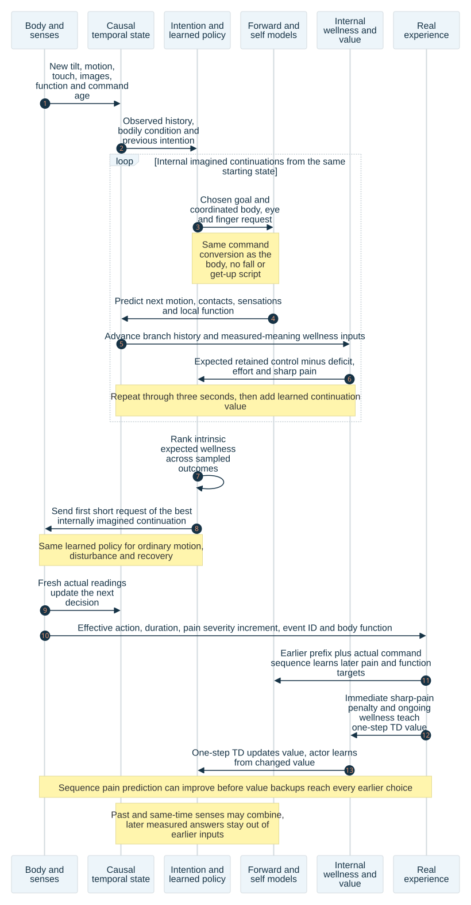

Effort or brief discomfort
Muscles work to lean, step or catch the body. The cost can be worth paying to reach something or avoid a worse result.
UEMA • wellness, falling and recovery • 27 October 2026
A useful movement may take effort. A quick correction may feel uncomfortable. Both can be worthwhile if they preserve the body and leave it with better control afterward.
This separate report resolves the objective choice left open in the previous sequence-learning design. It specifies a proposed objective, its data sources, the intrinsic learning loop and the checks needed before adoption. Model implementation and training remain paused. The animations are newly posed MIMo illustrations, not demonstrations of a trained recovery.
Muscles work to lean, step or catch the body. The cost can be worth paying to reach something or avoid a worse result.
A foot moves differently than expected. This is a reason to use the new reading and improve prediction. It is not automatically bodily harm.
An impact or joint load crosses a qualified physical limit. This must count strongly even when it lasts only a short time.
Homeostasis means keeping the body within conditions where it can function. It does not mean keeping every joint still or keeping every sensation pleasant. The homeostatic self includes both the body’s condition and the control it can sustain over itself and its surroundings.
The inspected skin mechanisms represent reversible mechanical discomfort and, in modulation mode, local loss of touch precision. It explicitly does not claim to measure tissue injury. The fatigue model can reduce actuator strength, so it does represent a functional consequence. The revised design keeps those meanings and adds a separately named, persistent virtual-damage model for damaging events.
Over time, add up retained control − bodily deficit − a small effort cost, with an immediate penalty for a sharp pain event. “Bodily deficit” means how far the body is outside a healthy operating band. Recovery helps because it stops an ongoing cost. Causing a problem first earns no recovery prize.
Retained control means a useful connection that still works now: for example, holding an object and being able to move it different ways without losing it.
The model predicts how each command changes its own sensing, strength and retained control. Its internal value learner estimates the resulting wellness through time; its policy and intention planner choose from that estimate. The same learned machinery handles a normal reach, an early correction and recovery after impact. There is no separate emergency routine or external harm allowance deciding which movement is permitted.
Suppose 50 ms of contact produces an illustrative pain-event penalty of -0.50 (not a calibrated severe-fall value), on top of -0.05 of ongoing discomfort: the new reward is -0.55. If the value learner expected no cost and its later-value estimate is also zero, its prediction error is -0.55. This creates a negative learning error. The next accepted learning update can lower the estimated value of the command just completed.
Teach the earlier approach too. Take the recorded view and body state from before the fall, the commands actually sent afterward, and the pain that arrived. Train the forward model on that whole example: “From this starting condition, this command sequence led to this pain and loss of function.” On a later similar approach, imagination can predict that consequence before contact and compare other commands using the same intrinsic wellness. No one supplies a rule saying “step left” or “put the hands out.”
This direct sequence lesson reaches the earlier prediction in one learning update opportunity. It does not guarantee the model learns it correctly from one example. Teaching the value of every earlier choice may take more rounds of revisiting saved examples and updating its estimates. Measure both separately: how soon the earlier pain forecast changes, and how soon the chosen movement improves without forgetting useful motion.
Objective checks before adoption: compare the same recorded trajectories with and without a localized persistent loss; add a second affected region while the first deficit stays fixed; add sharp 50 ms pain without lasting damage; keep damage after pain fades; place harm just beyond three seconds; and compare harmless effort with useful retained control. Hold unrelated C/E inputs fixed when isolating each effect. Worse measured function must reduce intrinsic return in those comparisons. If the producer or weighting cannot distinguish the cases, repair that internal objective before training; a better predictor cannot recover a preference missing from its learning signal.
This is a new, explicit use of UEMA’s signals. The old raw motor score and the old remembered-goal ranking remain identifiable legacy consumers. Neither is silently renamed the reward for an entire movement.
These are teaching numbers, not measurements from MIMo. Suppose current control is 0.3, and a useful movement raises retained control to 0.6. During the first half-second, the movement has a deficit of 0.2 and effort of 0.8. For the next 2.5 seconds, the body has recovered and keeps the new control.
The movement wins despite its temporary cost; this harmless-effort example has no sharp-pain event term. These totals omit discounting to make the arithmetic easy to inspect. For a damaging movement, the calculation must also include its later loss of sensing, strength and control. The internal objective can still learn a poor tradeoff if those effects are underweighted or mispredicted; that failure must be exposed and corrected through the same learning design, not hidden behind an external selector.
At the edge of the block, UEMA can predict a fall. It cannot read the actual floor impact before that impact happens. This rule must hold while it moves and while we teach many moments in one training sequence.
The concern being answered: “The forward model has a cross-modal attention path without a causal mask. Changing a later observation must not change an earlier prediction.”
Status: this section specifies the repair and its checks. It does not change the model or resume training.
The network chooses which readings to use when making its next estimate.
Different senses share information. Sight can help explain touch, and touch can help explain sight.
A rule that blocks information which had not arrived when a choice was made. It does not block all communication between senses.
These times explain the information rule; they are not measured reaction times. Read the diagram from left to right. On a small screen, scroll sideways.
Each row below is a prediction made at one moment. Each column is a measured reading. “Yes” means that reading may help the prediction. “No” means the mask must block it. This simple example assumes each reading arrives at the time printed above its column.
| Prediction made at | 1.0 s readings | 1.4 s readings | 2.2 s readings | |||
|---|---|---|---|---|---|---|
| Sight | Touch | Sight | Touch | Sight | Touch | |
| 1.0 s | Yes | Yes | No | No | No | No |
| 1.4 s: at the edge | Yes | Yes | Yes | Yes | No | No |
| 2.2 s: after contact | Yes | Yes | Yes | Yes | Yes | Yes |
Late-arriving readings need special care. A camera image taken at 1.4 s but received at 1.5 s was not available for the 1.4 s choice. Save when it was taken and when it arrived. The reading rule follows what was available, not just the label on the image.
The inspected live and replay routes give the model an already-observed history and use its newest output. At 1.4 s, that input history does not contain the actual 2.2 s impact. The missing bridge mask alone therefore does not prove that these current decisions see the future.
To teach predictions at 1.0, 1.4 and 2.2 s in one batch, all three moments may sit in the same input array. Without the time rule, the 1.4 s output could read the 2.2 s answer. Every connection must obey the matrix above before we use those earlier outputs as forecasts.
The concrete defect in that proposed use is answer leakage: a prediction is helped by the answer it was supposed to discover. A lower training error would then hide a bad predictor. Masking prevents this shortcut; it does not, by itself, teach accurate motion.
Also change a touch reading that really was available at 1.4 s. That reading is allowed to affect the 1.4 s estimate. This second check helps catch an incorrect repair that blocks useful senses along with future answers. After a learning update, a new prediction can improve; that is different from changing a prediction already made.
UEMA should learn whether a movement preserves its sensing, strength and useful control over time. At the edge it uses predicted consequences to choose. Afterward, actual bodily effects teach how good that prediction and choice were. This keeps the reason for moving inside the model’s wellness objective; the mask neither adds a new reward nor supplies a fall-recovery routine.
A harmful movement must not look successful because a damaged sensor reports less detail or because the predictor secretly saw the answer. Learn from the experienced senses together with the declared bodily-function evidence. Keep hidden clean simulator readings for auditing, unless the model is explicitly allowed to sense them.
Inspected source. In forward_model.py, stage 1 exchanges senses at one time. Stage 2 masks later times within each sense. Stage 3 flattens time and sense into one array and has no time mask. An earlier internal output can therefore depend on a later supplied input. The main inspected prediction heads consume the newest output; this is why the current history-only route and proposed parallel earlier-time outputs require different conclusions. The source review records the exact paths and line references.
Mask definition. Give each output a decision cutoff and each measured input its acquisition time, arrival time and validity. Permit an input only when it was available by that cutoff and belongs to its declared context. Do not join unrelated worlds or episodes as consecutive sensor moments. Previously acquired memories may remain available under the declared memory contract. All available senses at the same time may exchange information. Implement time blocks across modalities, rather than a plain lower triangle over serialized sense tokens. A plain triangle would wrongly block a same-time sense merely because it was listed later.
Close indirect paths too. Apply the same availability boundary to every cross-time attention layer and any feature that can carry later data: earlier-token states, memory retrieval, bodily self-state, normalization, padding and reused caches. A token with an early timestamp is not safe if an earlier processing stage already mixed future measurements into it. Do not compute sequence-wide normalization from future examples for an earlier prediction. Never reuse a bidirectionally processed cache as a causal past cache.
Future commands need ordering too. When replay teaches a sequence, give each predicted transition only the command executed for that transition. Later commands may have been chosen in response to later observations. They must not leak those observations back into earlier predictions. In a second counterfactual check, change only executed commands after transition k: predicted physical states through k must remain unchanged. A proposed future command sequence is allowed for imagination, but a later command cannot physically cause an earlier body state.
Replay and targets. Reconstruct the sampled decision from its recorded earlier context and the information available at that decision. Keep later measurements and wellness outcomes in target fields, not acting inputs. The inspected replay route already separates context, current input and the next target; preserve that separation. Store the previous command, active filter, intention, available bodily-condition fields, world identity and timing needed to reproduce the decision. A retrospective teacher may study the completed sequence, but its hindsight is a training target or later weight update—not an early policy observation.
Imagination. Predicted future features are allowed within each imagined candidate. Produce them from the available state and proposed actions, advance that candidate’s own state, and keep their predicted provenance distinct from real measurements. Do not insert true next frames between imagined steps and report that result as autonomous prediction. Imagined contact must also advance the predicted bodily-function state and the intrinsic wellness consequences used by the next choice.
Timestamp ordering. Declare how simultaneous sensor delivery, a command decision and command dispatch are ordered. A measurement delivered after the decision is unavailable to it even if the acquisition timestamp matches. The same ordering must hold in live inference, replay and parallel training. Reinitialize or rebuild caches after changing the mask semantics; do not carry cached states made under the old mixing rule into the successor without an explicit conversion.
These are the specific implementation and acceptance steps proposed here. They have not been executed by this document work. Implementation and training remain paused. The overseer owns the design decision; later execution remains with the project’s authorized coordinator and managed test process.
Independent source review: current capability and attention paths · Adversarial review of this replacement section
Added after the patent and current-code review
Getting upright and feeling well again are different jobs. UEMA needs to learn both: change its movements while its body is disturbed, and account for senses or muscles that have not fully recovered.


Watch the support change: the body tips from its toes, then the hands and knees meet the floor. The knees stay down while the elbows bend and the chest lowers. The hips shift back, the hands lift, one foot comes forward, and the body rises. Contact forces still require a physical simulation; these pictures show the proposed arrangement and timing.
The meter illustrates a setting that would make one skin region's pressure readings coarser. It does not change the rendered poses or a running model. It is not measured damage from this fall.
| Illustrated time | Movement to inspect | What experience must teach UEMA |
|---|---|---|
| 0–1.60 s Stand, then tip | The body rotates toward the block edge. The toes remain at the edge while the heels rise. The arms begin reaching toward the floor. | Use changing pressure and tilt to predict loss of support early enough to correct it. |
| 1.60–1.86 s Leave the edge | The pelvis descends, the trunk turns forward, and hips and knees bend to clear the block. The hands approach the floor. | Predict where contact will occur and how a changed command affects the whole body, including wrists and head. |
| 1.86–3.90 s Lower on hands and knees | Both knees meet the floor and stay in place. Elbows bend as the chest lowers, then extend as the chest rises. The hips turn around the knees instead of leaving the knees hanging in the air. | Learn how elbow motion changes loading, and how to obtain support without overloading a hand or knee. |
| 3.90–5.50 s Shift from hands to knees | The hips shift back toward the heels before the hands lift. The chest then rises over the knees. The arms return beside the trunk. The knees remain in place. | Predict whether knee and shin contact can support the body before releasing the hands. |
| 5.50–7.30 s Plant one foot | The right knee moves forward while the left knee stays down. The right foot swings forward, turns toward the floor and plants. The trunk shifts toward that foot. | Coordinate hip, knee and ankle movement so the foot clears the floor and the remaining contacts support the body. |
| 7.30–10.30 s Bring the other foot under, then rise | The left knee lifts. The left foot comes forward while the right foot stays planted. Both hips and knees extend as the trunk returns upright. | Keep support during the transfer. Correct for slipping, changed strength or uncertain pressure readings. |
| 10.30–12.00 s Finish upright | The final stance is held for inspection. The example sensor state continues recovering. | Standing again must not erase remaining fatigue or loss of sensing precision. |
The pictures suggest a possible arrangement, not the only recovery. A learned response could roll, remain low, use a different hand, or postpone standing when that preserves more function. We must not reward the learner for matching these joint poses.
The display has 30 frames per second, with 361 poses from 0 to 12 seconds. A 500 ms viewing interval spans 15 frame intervals. The proposed model still receives feedback within that interval; the pictures are not a command schedule for the learner.
From edge departure to the first low floor pose takes about 0.26 seconds. The authored pelvis path includes gravity during that interval. Rotations and limb movements are posed, so this is not a solved whole-body fall. The later recovery takes several seconds because support transfers between hands, knees and feet. The total duration is an illustration choice, not a measured learning result.
Each displayed pose is checked against floor and block geometry. The corrected landing also checks that the surface beside each knee stays within 1 millimetre of the floor while both knees are down. A closest-point check makes sure this is knee contact, rather than a different part of the leg touching. Hand and foot targets are solved within joint limits; the record reports fitting errors as well as clearances. These geometry checks cannot measure load-bearing ability or impact forces. The next physical qualification must measure those quantities in the simulator. Revised pose and clearance record · Renderer source.
The meter illustrates an affected skin region with q = 0.20 at 1.86 seconds. This is a chosen example, not damage calculated from the pictured fall. It follows q = 1 − 0.8 exp(−elapsed/10 s), the existing zero-load recovery rule. At 12 seconds q is about 0.71. A value of 0.71 is a precision setting, not “71% accuracy.” The meter changes neither the pictures nor a running model.
Imagine trying to stand with a hand that reports pressure in large steps. A gentle increase in load may be invisible until the reading suddenly jumps. UEMA must learn to use that hand differently, use other sensations, or choose another movement. A separate “bad” score cannot by itself create this experience.
A meta-parameter is a setting that changes how sensing or movement works. Examples are the size of a pressure-reading step, a sensor's delay, or the force a muscle can produce. Here these are temporary body-state settings. They are different from the learned network weights that store experience.
I read the complete description and all 30 claims of US11537850B2, and inspected its 12 drawing sheets. It describes interactions changing sensory resolution or the processing of sensory information. Figure 5 separates changes to sensors from changes to neural processing. Claims 10–11 address temporary local resolution loss from deformation; claim 1 includes changes to neural-network processing. Some examples distinguish recovery from permanent loss of maximum resolution.
The pressure example's five-minute effect is an example in the patent, not a calibrated MIMo recovery time. The existing code's ten-second recovery constant is a separate engineering choice. Neither supplies a measured injury threshold for this block fall. The recommendation below applies the patent's functional idea without treating all its possible mechanisms as mandatory.
| Setting | Actual effect | Current source and design decision |
|---|---|---|
| Local touch precision | Pressure and shear readings are rounded to larger steps in the affected skin region, then regain precision over time. | Implemented. BodyFunction and virtual skin do this. In modulate mode the changed readings reach learner inputs, contact wellness, memory and self-state. Keep this producer; qualify its load and recovery profile. |
| Muscle force capacity | A fatigued actuator has less force available, and recovers according to its fatigue state. | Implemented for fatigue. It changes simulator actuator gain and force limits in its modulation mode. Direct impact-related muscle or joint damage is a separate proposed extension. |
| Position-sense precision and delay | Affected joints could report less precise or older position and motion readings. | Proposed impact extension. Specify the affected joints, numeric precision, delay and recovery before enabling it. Preserve timestamps so old data cannot masquerade as current data. |
| Balance sensing | A qualified head disturbance could temporarily bias or delay motion/tilt readings. | Proposed extension. Apply only with a declared physical cause and recovery state. Falling is not itself proof that the balance sensor has been damaged. |
| Vision quality | A qualified eye/head effect could change image sharpness, exposure range or update delay. | Proposed impact extension. Do not blur every image after every fall. Location and cause must justify the effect. |
| Processing capacity | A reversible gate could limit available features or increase a represented processing delay. | Optional, not the first implementation. Keep its state explicit and predictable. Do not erase learned weights or throttle the computer to simulate pain. |
These are source capabilities, not a claim that every switch is enabled. The inspected training option defaults body-function modulation to off. observe records a shadow effect while leaving experienced quality healthy; modulate changes the experience. The self-state pathway represents the model's own sensing and movement capacity. Its settings distinguish learning a forecast from letting that forecast affect perception or choice. A run receipt must identify the enabled modes.
The current code maps local q in [0,1] to b = round(2 + 21q) bits. It rounds pressure and shear in pascals to steps of 100,000/(2b − 1). Intact readings are passed through unchanged. At q = 0.20, b = 6 and the step is about 1,587 Pa. At q = 0.80, b = 19 and the step is about 0.19 Pa. Thus q = 0.80 does not mean “80% prediction accuracy” or “80% muscle strength.” It is a control setting for a specific sensing operation.
The number of skin locations stays the same. The reading becomes coarser; pressure is not simply multiplied down. High pressures are not clipped by this quantizer. An older optional movement-drive route scales sensor amplitudes and learning/exploration settings after stillness. That is a different mechanism and should not be silently added to this impact model.
Keep a small record for each affected body region: the load and exposure that caused the change, its present sensory and force capacity, its recovery clock, and any lasting limit. The world owns this record. A new intention, a replay sample, or restarting the process must not heal it.
Temporary impairment and lasting damage need separate fields. Temporary impairment can recover. Lasting damage lowers the maximum it can recover to until a declared repair occurs. A smaller pain reading is not evidence that either has healed. Surprise in the predictor is also not an injury measurement.
If “spurious damage” means a false impact caused by a numerical or logging error, fix that error rather than teaching the model to fear it. If it means simulated harm inside the virtual body, give it a defined physical cause and a real functional effect in that body.
The model should learn that a hard impact can leave it with worse control afterward. It should also learn that a short effort or a controlled descent can preserve future control. This is how the same objective can favor a quick correction before a fall and a careful recovery after one, without a programmed “fall → kneel → stand” routine. Keep loss of body function in that objective: making a sensor less informative must not earn a reward merely because its readings become easier to predict.
The next authorized implementation target would be this common function-state/sequence contract, preserving the existing tactile, fatigue, self-forecast and replay routes. The overseer owns the design; the builder would execute after the implementation pause is lifted. Diagnostic preparation must use the existing managed runner and cumulative budget. No implementation or training is launched by this document.
Independent source review with exact files and line references · Complete patent reading record.
Choose a sequence, then play or drag the time slider. Both views show the same pose at the same time. The caregiver is hidden. The displayed times are illustrative, not measured response speeds or a reconstruction of an actual fall.


| Sequence | What moves together | What it challenges |
|---|---|---|
| Early correction | The trunk tips; one leg steps forward while the other supports. Knees bend, arms change position, and the trunk returns toward upright. | Short-lived effort can preserve support. The model should not wait for pain before correcting. |
| No timely correction | The body keeps tipping. The head and trunk approach the floor. The clip stops at the first posed body–floor contact. | A brief dangerous event must not disappear inside a half-second average. The later cost must teach the earlier missed response. |
| Controlled lowering | Both knees and hips bend while the pelvis moves down and back. Both feet stay near their starting places; actual support forces still need a physical test. The arms adjust with the trunk. | Lower head height is not automatically a bad result. Downward motion can increase stability. |
| Late response | The body has tipped farther before both arms extend toward the floor. The fingers point toward the floor ahead of the head. This is a deliberately questionable contact arrangement, not a successful catch. | A fingertip-first response may change where an impact occurs; it is not automatically safe. Hand, wrist, shoulder and head loads all matter. |
What the renderings establish: visible body arrangements and timing relationships. They do not establish forces, balance, injury severity or successful recovery. Each clip holds its final pose from about 1.5 seconds onward for inspection; that hold is not a prediction that the body would stop there. No joint-angle sequence shown here is supplied to the learning policy.
All four clips use the existing MIMo geometry cache, with 61 poses and two views each. Joint positions were posed and forward kinematics calculated; no physics integration or trained model was run. The renderer records floor clearances, pose-fitting residuals and any geometric height adjustment. Those records prevent a visually plausible animation from being treated as physical evidence. Geometry record · Renderer source.
The pose review also rejected a first rendering in which the lowering motion failed to bend the knees properly. This matters: a picture must not silently supply support or healing that the proposed model has never explained.
Actual joint motion, balance readings, touch and images describe what is happening. The physical world supplies fatigue and qualified load or damage measurements.
The recent sequence distinguishes a steady lean from a rapidly increasing fall. Include delays, active commands and past impacts.
Choose an outcome and coordinated body, eye and finger commands. Continuing the same goal is useful only while its consequences remain worthwhile.
Advance body, contacts, bodily condition and sensory state together. Predict several possible outcomes when contact is uncertain.
Compute actual retained control, deficits and effort from recorded evidence. Predictions cannot rewrite these measurements.
Learn the future sum of bodily wellness and retained control. Auxiliary predictions of contact, function loss and uncertainty help that same model learn consequences.
Compare three-second futures and their continuation. Send only the next short command, then use new observations.
Keep real requests, sent commands, durations, contacts and later consequences. Teach prediction, value and choice from that same timeline.
The simulator defines what the body is: joint ranges, actuator force, contact mechanics and how load changes local function. These are body laws, like gravity, not a second controller choosing a step, brace or get-up. Movement choice belongs to UEMA's learned policy and its internal intention planner.
A transient is a change that happens over a short time. This diagram follows a stumble without assuming a fixed correction sequence. Scroll sideways for all lanes.

Open full-size diagram · Mermaid source
Before impact, predicted harm can already make a correction preferable. After impact, actual load and loss-of-function measurements teach the harm predictor and value learners. The model should not need to experience damage on every new fall before responding.
Immediate correction uses existing learned weights with new sensations. Learning updates then improve future responses. They are connected processes, but the correction does not wait for a gradient update to finish.
Train on contiguous experience windows that include the start of a disturbance, the response, contact and recovery. Use a real past prefix. Then predict several steps without supplying the correct intermediate answers. Compare predicted and actual joint motion, contacts, sensations and bodily condition at each later time.
Averaging a sharp impact into one mild half-second value would destroy the lesson. Save peak load, impulse (force accumulated over contact), exposure duration and contact identity at the physics sampling rate. Join those events to the corresponding short motor interval. Do not replace them with a smoothed comfort score.
Record the pain as soon as it occurs. Promptly train on that event and the movements before it, while keeping ordinary successful movements in the training set too. The aim is to learn the cause and avoid repeating it, without forgetting how to move usefully. A strong pain signal alone does not guarantee that the correct cause will be learned.
The value learner compares what actually happened with what it expected to follow each command. Replaying the connected sequence carries the later loss—or the preserved control—back to earlier choices. The policy learns which early commands produce better futures. It is not trained simply to copy every action the old planner chose.
Use more examples around rare harmful events without pretending they occurred more often than they did. Correct the sampling weights when estimating average risk. Evaluate event probabilities on an untouched, representative set as well as on deliberate stress cases.
Prediction errors are training targets, not automatically pain. Separate missing knowledge from unavoidable variation. A good predictor can admit several possible contact times and still support a useful correction. Judge it by calibrated uncertainty and successful control, not a requirement for zero error in every instant.
The objective should prefer recovery when the body is depleted. It should also prefer a useful, affordable action over doing nothing merely to avoid all effort. Once nothing useful is gained by moving, stillness can be the right result. Perpetual motion is not gain of function.
The following definitions close the earlier “use wellness” ambiguity. They are design choices for a new consumer of the existing signals. Physical thresholds and fitted model quality still require measurement; the document does not invent biological injury limits.
For an actual interval of Δt seconds: r = dt * [ C - D - eta E ] - lambda_I * sum(delta A_event) C: verified retained causal control, in [0,1] D: sum of three positively weighted deficit families, in [0,3] E: measured mechanical effort / reference effort, clipped to [0,1] eta: initial proposed effort weight 0.05 lambda_I: fixed intrinsic pain scale, calibrated before training as described below A_event: nondecreasing sharp-pain severity in [0,1] for one physical event Choose the greatest predicted discounted sum of r using UEMA's own learned value and action-conditioned imagination. No external risk budget, harm veto or scripted emergency selector.
Use a continuous-time discount γ(Δt)=exp(−Δt/τ). Initial proposed τ is 10 seconds, giving future benefit weight beyond the three-second explicit prediction. It is a design setting, not a measured biological time constant. Compare τ=5, 10 and 20 seconds and η=0, 0.01, 0.05 and 0.1 on the same recorded examples before adoption. Require the declared anti-exploit comparisons to keep their meaning across these settings: injury farming and false self-label expansion must not pay, and harmful novelty must not outrank matched retained useful control. These are qualification requirements for the intrinsic objective, not command-time external vetoes. Safe alternatives may reasonably exchange preference as effort or delay matters more; report those tradeoffs instead of calling every ranking change a defect.
For each fixed body region and function, measure its deficit from the healthy band in its declared physical-function scale. Function variables have their physical bounded ranges; do not first clip raw loads and thereby pretend unequal effects are equal. Within each of the three families (fatigue/capacity, sustained aversive exposure, persistent functional damage), sum per-region deficits using strictly positive fixed weights that sum to one in that family. Square each normalized functional deficit before weighting. Give each family weight one initially, so D is their sum in [0,3], not their maximum. A new deficit therefore cannot disappear just because another family already has a larger value. Regional weights reflect declared functional importance; changing inventory or weights requires a new objective version, never adding comfortable sites to dilute an old injury. Prediction surprise and preferred joint posture are not bodily deficits.
Choose the pain scale before training, not during each movement. Define a reference range of severe pain from the declared body load/response curve. On fixed matched trajectories, measure G: the return advantage of the painful route over the comfortable route when the sharp-pain term is excluded. Use the same duration, discount and continuation in both. Set one fixed lambda_I above the largest measured positive G divided by the reference event's A, with a declared margin for measurement uncertainty; freeze it for evaluation. Verify on held-out trajectories that slight extra control does not pay for that severe event, that useful ordinary effort is still worthwhile, and that reducing an unavoidable impact is preferred. If the ordering fails, fix the body signal or its fixed scale before training. This calibration defines the body's intrinsic pain response; it does not filter or replace commands.
The arithmetic below is only a small learning example. With C at most 1 and the proposed ten-second discount scale, control alone can contribute up to 10 utility-seconds. A one-unit pain penalty therefore does not establish severe-pain dominance. No numeric pain coefficient is approved by this report without the matched comparison.
Sharp pain needs an immediate term. A 50 ms severe event must not become negligible merely because duration is short. For each body-region/contact event, derive calibrated nonnegative rapid nociceptive excess from peak pressure, shear load and joint strain, using the body's declared onset levels and scales. For each measure use e=max(0,(measured magnitude - onset level)/severity scale), take the largest e across those measures, and set a=1-exp(-e). Define A as the largest a reached so far in that event. This gives a concrete monotone bounded pain signal without a hard clipping plateau; levels and scales are versioned engineering parameters requiring body qualification. At each physical sample record only delta A=max(0,A_new-A_saved), update A_saved immediately, and sum those increments in the completed motor interval. Use a region/contact identity and calibrated onset, separation and re-contact rules to merge numerical chatter. Keep open events and peaks across checkpoints. No positive reward is paid when pain recedes or an event closes.
The phasic term describes a sharp aversive sensation, not necessarily lasting injury. Persistent damage has its separate function state and can remain after pain fades. Sustained pain uses the duration-integrated aversive-exposure family of D. For that producer split, exclude the instantaneous peak-load term from D: its sustained aversion uses the pressure-exposure integral and rubbing-work history only, with their declared units and scales. The existing composite mechanical-aversion formula cannot be copied unchanged into D because it also includes the peak. Record this as a new wellness-producer version; preserve the original observation/function dynamics. Continuing exposure is a distinct time signal, not a second copy of the phasic reward. Do not count three measurements of one impact as three independent pain events. Numerical contact artifacts must be repaired rather than reinforced as injury.
For arithmetic only, suppose lambda_I=1. This is not the proposed operating coefficient; the fixed calibration above must choose that coefficient. For a worked 50 ms interval with C=0,D=1,E=0 and delta A=0.5, r=-0.05-0.50=-0.55, compared with -0.05 without the phasic term. These are illustrative units. For each severe-event comparison, measure the possible gain G in discounted control/condition and require lambda_I times the event-severity increment to exceed the gain that should not compensate that event. This is an offline objective comparison and intrinsic weight choice, not an action-time veto. It is not a guarantee for every unseen event.
Compute E from actual mechanical power, such as Σ|torque × angular velocity|, using the existing actuator conventions. Fix its reference from the qualified body envelope and record the units. No actuator command amplitude is substituted for actual work. Contact and damage predictions explain future bodily deficits and retained-control loss. They are auxiliary learning targets, not a separate command-admission gate. When the body model produces a loss of function, preserve that loss after the brief contact ends. Sharp pain can also occur without lasting damage.
The old detrended goal rank may remain a retrieval aid during migration. It is not r: subtracting a running average would hide a maintained benefit or a sustained deficit. The old raw motor score is not r either. Pin producer versions, fixed scales and the new objective version in every transition.
C measures control available from the current arrangement, not the general skill to acquire it later. A held object creates a present hand–object coupling. Merely having learned how to pick it up does not already earn that same retained-control score.
Build a versioned catalogue of local sensory relationships discovered in actual experience: body or external features whose changes can be influenced while a relationship remains intact. Each entry stores raw observation references, a stable entity/feature identity, two distinguishable bounded outcome changes, tolerances derived from sensory noise, a short probe duration and a retention condition. No entry contains a prescribed lean/reach/curl sequence. An entry for an object cannot count an acquisition routine as proof that the object is already controlled.
In matched, comparable starting arrangements, the learned policy attempts each change while maintaining the relationship. Record success separately for the two directions. Compare against holding still and shuffled commands. Let L₊ and L₋ be lower confidence bounds on the two actual success rates. Let U be the largest upper confidence bound among the corresponding hold and shuffle rates. Define cj=clip(min(L₊,L₋)−U,0,1). This is a conservative two-direction control score, not the probability of two incompatible outcomes occurring at once.
Use 95% Wilson confidence intervals for independent matched binary trials, showing sample counts and all failures. For repeated correlated windows, use episode-block resampling instead of treating every frame as independent evidence. Interventions remain failures for the unaided-control comparison. These intervals do not create a joint guarantee over the whole catalogue.
Pin the reference probe-policy version with the catalogue and teacher. C means verified local controllability under that retained reference policy, with a present-time sensory-validity gate. Requalify before replacing that reference or changing its labels; an update to the main actor does not rewrite yesterday's success evidence.
C is a fixed-weight mean of those scores, grouped by distinct effect families. Keep the catalogue and weights fixed during a comparison; deduplicate identities and cap each family’s weight. Splitting an object into two labels, adding easy entries, or changing feature scale must not create a reward. Add newly discovered relationships only through an explicit catalogue version, preserving old evidence and reporting the changed measurement basis.
An internal learned control estimator, frozen during each actor-update block, maps current sensory history to the evidence-backed control scores. It is fitted only to the matched outcomes above; actor gradients cannot change its labels or weights. At rest, recent verified control remains supported while observed contact and relationships persist. Loss of contact, identity ambiguity or changed dynamics reduces that support. Do not require endless wiggling simply to collect a fresh payment.
Keep general skill competence in a separate ledger. Unknown local control starts uncertain, not automatically proven or permanently forbidden. Existing bounded curiosity/exploration acquires informative real experience. Improvement is checked on held-out sequences with a frozen reference; repeated noise, forgetting and rediscovering an old label do not mint new exploration credit. Exploration selects experience within the physical envelope; it does not add an unbounded novelty bonus to r.
Also store which sensory contexts support each control estimate. In imagination, an unsupported or uncertain relationship receives no positive retained-control credit until actual bounded acquisition supplies matched evidence. The planner may explore it within the physical envelope, but cannot certify its own imagined success. Audit high-scoring selected plans against actual outcomes; freeze teacher weights and enforce this evidence-support check.
This internal estimator is still an estimate. Keeping actor gradients out of its targets prevents self-awarded control; it does not create an external movement selector. Audit for camera-motion shortcuts, self-occlusion, object relabeling and false control. Gate adoption on measured retained-control discrimination. Preserve the objective version in replay; do not retroactively label an old action a success using a newly trained actor.
Keep current reversible pain/exposure and fatigue intact. Add a separately named engineering damage state dj for each body region only when its load model is defined. This represents virtual functional damage, not a medically calibrated human injury probability.
For one physical contact event, collect the peak stress, impulse (force accumulated over contact) and maximum joint strain in its affected region. Normalize each by that region’s qualified limit. Define event excess ej as the maximum squared positive exceedance across these measures, rather than summing three descriptions of one impact. At each physics sample, charge only the increase since this event's previous excess: new damage = min(remaining intact capacity, regional scale times max(0, new excess minus previous excess)). Update the stored excess immediately. Do not charge the full peak every sample or wait until contact ends. Define an event by region/contact-pair identity and calibrated onset, separation and re-contact times; merge threshold chatter into the same event. Preserve open event IDs, accumulated impulse, peaks and prior charges across checkpoints. Distinct events remain distinct. For sustained overload, use a separately defined exposure integral; the event/exposure ledger prevents counting the same load twice.
The world updates d, not the actor. Map it to a declared loss of function—for example the affected actuator capacity multiplied by (1−d)—and expose its consequences through the existing sensory/body interfaces. κ and the limit curves are qualified against that virtual body’s specified function. Default healing is zero until a recovery law has been explicitly chosen and tested. A reset or checkpoint reload cannot secretly heal it.
Calibration separates joint/actuator limits already present from new impact limits. Measure loads on a copied body across graded contacts, check units and time-step sensitivity, and declare where virtual function begins to fail. A low-discomfort contact cannot be labelled harmless solely because the skin model reads low. Any model of human injury would require different evidence and is not claimed here.
The model does not wait for pain to start a correction. From recent tilt, velocity, contact and command history, its forward model predicts what a request will do to body function. A command that preserves useful sensing and force can have higher learned future wellness before any impact occurs. After an unavoidable impact, that same prediction-and-choice loop can prefer staying low, rolling or rising as their expected consequences change. No named emergency mode chooses among them.
Train auxiliary action-conditioned heads for contact timing, load and the distribution of later function. Use proper predictive losses: binary cross-entropy for observed contact occurrence, regression or a stated probabilistic observation loss for motion/function, with validity masks and actual timestamps. Unobserved future endings are missing labels, not evidence that nothing happened. Their predictions enter imagined state and the internal value learner; they do not veto commands.
Evaluate candidate returns over sampled model outcomes, not one average pose that hides different contact possibilities. Rank the mean predicted discounted intrinsic wellness. This is the declared decision rule; it has no probability allowance, worst-tail threshold or external fallback. Uncertainty remains represented in the policy's history and predictions and is evaluated against real outcomes. It is not converted into an invented zero-harm value.
Intrinsic does not mean guaranteed. A finite wellness objective and a learned model can misvalue a rare harmful event or prefer a bad tradeoff. Test that the learned preference actually preserves function across held-out impacts and useful effort. If it fails, identify whether the body-function producer, wellness scaling, horizon, prediction or policy learning is responsible. Do not claim that deleting a risk gate proves robust behavior.
Keep the proposed 50 ms feedback interval and three-second imagination horizon distinct from 500 ms viewing intervals. Initially, simulation may wait for computation. For real-time use, the same learned feedback policy must produce the next command on time using current observations and only completed, correctly timestamped imagination. A late imagined plan cannot replace a newer command. This is command-age integrity, not a hand-coded emergency action. Measure sensing-to-actuation delay before claiming fast correction.
Represent state h from the causal sensory prefix, estimated body pose/velocity and contacts, previous intention, active command/filter state, observed or inferred local function, fatigue, retained-control evidence and elapsed time. Every imagined branch starts from its own copy. The simulator owns physical function; the model learns estimates and transitions from allowed sensory and self-state observations. Objective and encoder versions travel with replay.
Reuse the causal temporal core and goal-conditioned motor head. A goal head chooses carry-forward of the previous intention or an outcome identity from the existing experience ring; the motor head samples one coordinated body/eye/finger request conditional on that goal. The existing command conversion maps that request to the effective sent command. No outcome label contains a programmed fall/get-up sequence.
Each real interval stores h's observation prefix, chosen goal, requested and effective command, duration, subsequent experienced observations, function fields, pain event identity and delta A, and r=duration * (C - D - 0.05E) - lambda_I * sum(delta A). Two internal action-value critics learn by squared temporal-difference error to y=r+gamma * min(Q1_target,Q2_target)(h_next,g_next,a_next). The current goal/motor policies sample g_next and the request from current-encoder next-state features; target critics evaluate that same goal identity and effective command in target-encoder features. Store raw record identities so both refer to the same event. Next state carries the actually selected goal as its previous intention. A goal switch is not an episode ending.
Update the actor to increase the expected minimum critic value over its selected goal and effective command. Use reparameterized gradients for differentiable continuous requests and exact expectation over the finite shortlisted goals. If command conversion is not differentiable, use a likelihood-ratio gradient on the sampled request, with a state baseline; never take the log probability of a clipped command as though it were the request distribution. Hold critic and control-estimator weights fixed during this update. There are no risk multipliers or budget penalties. Training on real one-step targets avoids uncorrected off-policy multi-step returns and blind copying of planner actions.
The internal intention planner samples K=32 initial goal/request continuations as an initial compute setting, not a measured optimum. For each, sample P=4 model-outcome paths and advance 60 x 50 ms using the same goal/motor policy and learned function dynamics. At each step evaluate the intrinsic wellness of that branch; add the base policy's learned continuation value at three seconds. Average the four returns and select the first request of the best candidate. The continuation is the value of the declared base feedback policy, not a promise that every later replanning decision is already optimal. K, P and elapsed computation are recorded and compared before adoption. On the next real observation, update state and plan again. A deployable actor learns directly from actual return targets; internal planning is an improvement mechanism to compare against the actor alone.
Direct early-state pain supervision: for a recorded prefix ending at decision i, supply only observations available by i and the actual outgoing command/duration sequence a_i...a_(i+H-1). Unroll the forward/self model for H steps without inserting the true intermediate observations. Each transition receives only the command being executed for that transition. A later feedback-chosen command must not become an input to an earlier predicted state. At each predicted step, its pain head predicts that step's nonnegative event-severity increment and its function head predicts the later body-function vector. Targets are the recorded delta A and function vectors at those matching times, with world/event identity and validity masks. Train a summed multi-step squared error for the bounded severity increments and normalized function fields, and binary cross-entropy for whether a new pain event begins in an observed interval. Backpropagate through the entire unroll to the earlier action-conditioned prediction; stop target gradients. Split/reset histories only at real world boundaries, preserve open event identity, and never turn missing later records into zero-pain targets. Later observations are answers for the loss, not inputs to the earlier forecast.
The executed future command sequence is legitimate conditioning for this predictive lesson: it asks what those actions caused, not what the earlier actor already knew. At action time, replace it with each proposed command sequence generated internally. The actor still sees only its causal prefix. This supervised mechanism teaches predicted consequences, not a supplied avoidance action. After the model update, internal imagination can use the changed pain/function forecasts before the critic's long-range values have fully propagated.
When an actual pain event arrives, its phasic penalty enters the completed transition immediately and creates a negative temporal-difference error if the critic predicted a better result. Queue that transition and its preceding movement window for prompt replay. Preserve rare events; prioritize by bounded absolute TD error with a nonzero sampling floor, retain actual sampling probabilities, and use inverse-probability importance weights for the declared replay objective. Replaying a sequence uses successive real one-step backups, not an uncorrected multi-step off-policy return. The actor then learns from the changed internal value. This can make learning faster without promising that one fall teaches the entire response. Do not blindly copy the action that caused the pain or raise the whole network's learning rate.
For critic credit, keep the declared one-step off-policy target. Refresh target critics after each accepted optimizer step with an explicitly recorded exponential-moving-average setting (initial proposed rate 0.005); record update count, target lag and actual response change. Do not claim immediate whole-sequence value credit from merely queuing a preceding window. A deterministic planner argmax has no invented behavior density: do not apply naive importance ratios or multi-step Retrace to those actions. Replay-priority weights correct which records were sampled, not the unknown probability of the behavior action.
Train the forward and self models on contiguous real action-conditioned windows using one-step prediction plus free multi-step rollouts. Do not supply actual future observations to an earlier prediction. Prediction/representation losses update the temporal core; actor and critic heads initially read detached core features. Re-encode stored prefixes and goals under current and target encoders as appropriate. Update target networks only after finite accepted optimizer steps. Freeze the control-evidence estimator within the update block, retain its empirical labels, and audit objective-version migrations before mixing replay.
For a physical catastrophe, keep the actual pain/damage event and persistent function state. An absorbing complete-loss continuation has C=0,E=0 and D from the declared persistent function deficits, with no repeated delta A for the old event. Do not invent new sensation or erase ongoing functional loss. A logging cutoff is not a physical terminal state. Preserve model and optimizer, all worlds, replay, function state, control evidence, pending lessons, intentions and clocks. No restart heals the simulated body.
A three-second rollout cannot hide consequences just beyond its endpoint. Fit the continuation value from later real experience; check finite-window predictions against the same measured window. The finite continuous utility range, discount, bounded event severity and declared event-rate bound determine the utility-tail bound; event counting must not allow infinitely many new penalties in a finite interval. Show that bound when continuation is weak and test longer horizons on the same states. Do not claim guaranteed protection from an uncertain estimate. Delayed loss of function must teach the earlier choice through value backups.
| Pass | Candidate and adversarial failure | Change retained in this design |
|---|---|---|
| 1 · Comfort versus useful effort | Reward immediate comfort or improvement in comfort. This can prefer inactivity or reward causing a problem and then recovering. | Integrate absolute deficit over actual time; pay for effort modestly; value retained control as a level. No separate recovery bonus. |
| 2 · Dangerous transients and false control | A single sum lets novelty outweigh severe harm. General skill competence can reward “could grasp later” without maintaining a grasp now. Repeated commands or new self labels can inflate the score. | The initial separate harm gate was rejected by the operator. Retain matched control evidence and persistent functional consequences; teach the same internal policy/value loop to prefer preserved function. |
| 3 · Complete timing, learning and persistence | The earlier external budget/emergency selector violated the requested intrinsic design. A reset can heal injury; stale commands can arrive too late; pictures can hide unsupported poses. | Remove the budget and emergency selector. Use action-conditioned function forecasts, intrinsic real-outcome value/actor learning, persistent world-owned function, explicit timing ownership and geometric/visual review. |
| 4 ? Intrinsic movement choice | An external risk allowance and emergency selector supplied choices outside the requested learned mechanism. | One internal policy, action-conditioned forward model and learned future wellness handle ordinary movement and recovery. |
| 5 ? Brief pain and hidden additional loss | Time-averaging weakened a sharp impact. Taking only the largest deficit hid additional impairment. Queuing replay alone did not explain quick learning. | Add an immediate intrinsic pain-event signal, additive function deficits and direct earlier-state sequence prediction lessons. Calibrate pain scale against matched alternatives before training. |
Current revision review: Intrinsic learning and sharp-pain design ? Attention explanation ? Independent visual review and fixes ? Current desktop and narrow browser checks.
The original passes and their evidence remain historical. The current intrinsic revision supersedes their external risk-budget design after the operator rejected it; prior approval is not approval of that rejected mechanism. Independent findings are preserved in the first review, second review and final review and corrections.
The design is mapped below from measurement to learned behavior. Every proposed producer has a consumer and an acceptance question. Constants tied to actual body loads need calibration; trained behavior needs physical evidence. Those are implementation and qualification tasks, not permission to substitute a scripted recovery.
| Work in dependency order | Completion evidence | Failure action |
|---|---|---|
| 1. Bind units and preserve the starting state | Current model/world versions, signals, duration conventions and complete checkpoint agree. Healthy bands and scales come from declared body contracts. | Repair the producer/record mismatch; preserve old evidence under its old meaning. |
| 2. Build the finite objective and control evidence | Same saved examples rank useful effort above empty stillness when benefit exceeds cost; shaking, self-label inflation and drop/regrasp loops do not pay. | Repair the retained-control measurement, not a ball-specific movement score. |
| 3. Qualify physical loads and persistent damage | Separate reversible exposure from virtual injury; actual overload causes the declared function loss and survives restart. One event is not counted repeatedly. | Fix units, event grouping, time-step dependence or damage dynamics before teaching the actor. |
| 4. Connect the advancing model and learned correction | Changed commands change predictions and actual results; all future state advances. Contact and harm predictions are calibrated on held-out short and long windows. | Trace the incorrect state, action meaning or learning target; do not wait for more training to fix disconnected code. |
| 5. Compare learned behavior physically | Matched initial states show better early recovery, lower harmful loads, useful retained control, and successful movement after checkpoint reload and in changed scenes. | Attribute failure to perception, timing, prediction, choice or physical capacity using the recorded common timeline. |
Include ordinary effort, early stumble, late response, controlled descent, an impact beyond the short horizon, sensor noise, occlusion, fatigue, and an unavoidable-impact case. Record every attempt. Compare before/after learning, feedback actor alone, and that actor with three-second planning. Measure actual forces and retention alongside success rates; report human interventions and process failures separately.
The overseer owns design review and objective interpretation. The builder coordinates later authorized implementation and execution. Model code and training remain paused. The next implementation action, when resumed, is the unit/source binding and saved-record objective comparison above, using the existing runner and cumulative diagnostic budget. No training launch follows from opening this page.
Homeostatic reinforcement-learning research provides a framework linking learned choices to physiological regulation. It supports judging consequences through time, but does not supply MIMo’s physical limits or prove this proposed retained-control objective. Keramati and Gutkin, 2014.
The earlier constrained-control proposal was considered and rejected for this task because its separate admission mechanism controlled movement outside the requested intrinsic loop. This revision uses an internal homeostatic objective, learned value and policy; it does not claim that intrinsic learning guarantees safe decisions.
MuJoCo uses soft contact. Contact forces can coexist with some penetration; a pose’s clearance cannot establish a force-safe impact. MuJoCo contact model.
Inspected source: D:/UEMA_wt/causal_loop_20261025/Source/Python/lem/skin_mechanics.py, mimo_bridge/proprio_adapter.py, lem/model/wellness.py, wellness_channels.py, and the temporal policy/forward-model routes reviewed in the previous report. Browser checks · Clarity and visual review.